A photo app for iPhone and iPad
Frames for your photography.
Decks helps your photos and videos look their best on Instagram and Threads. Start with a template, add text or camera details, and customize every detail.
Try Decks on TestFlightAvailable in beta · iOS and iPadOS 18 or later
Choose a background and frame.
Choose white, black, ivory, or colors from your photo. Use a blurred photo background, or add a border in a color and width you choose.

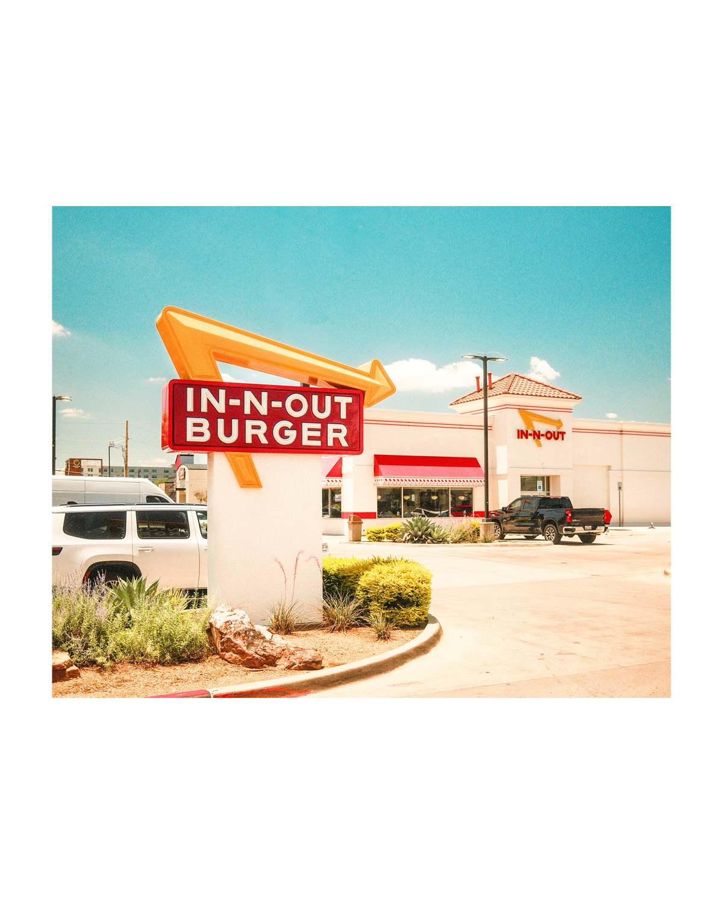

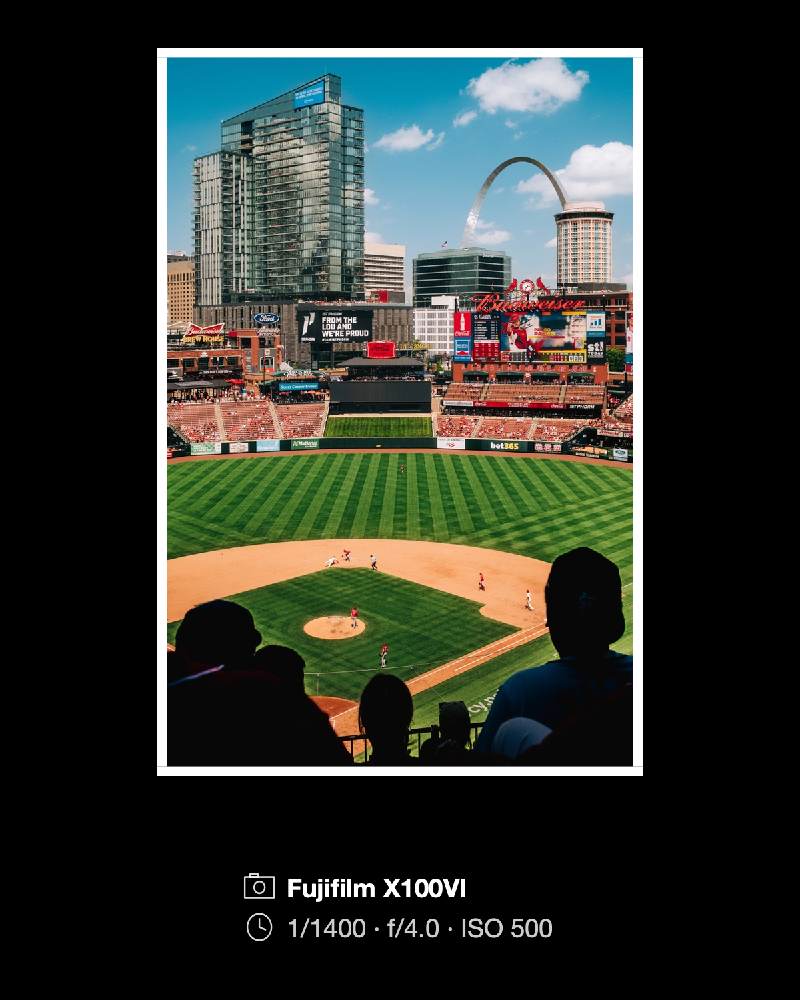


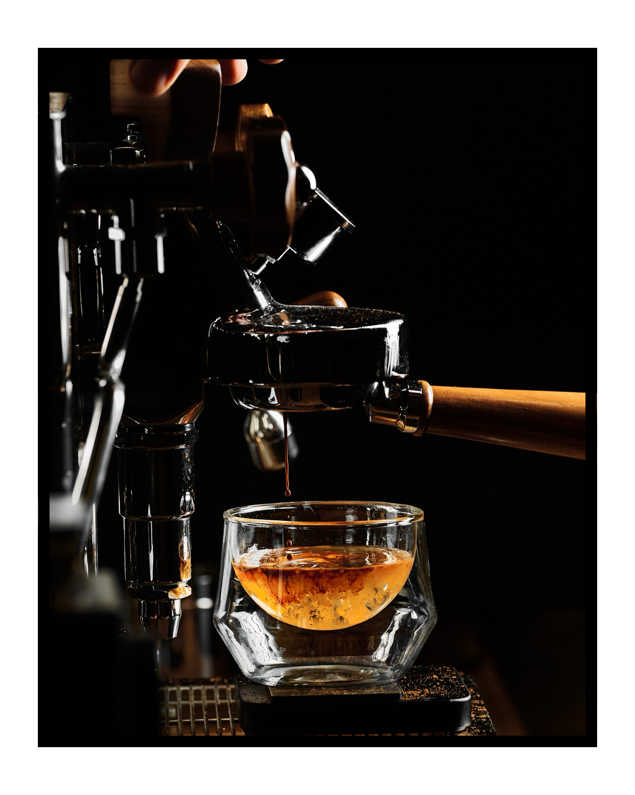

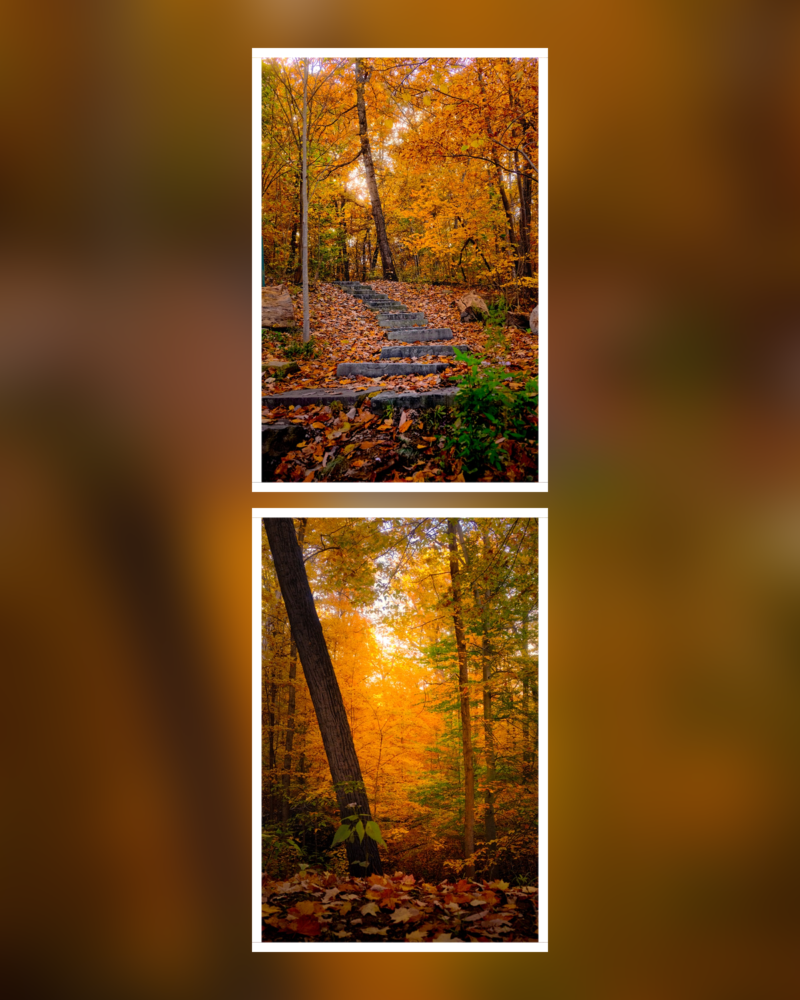

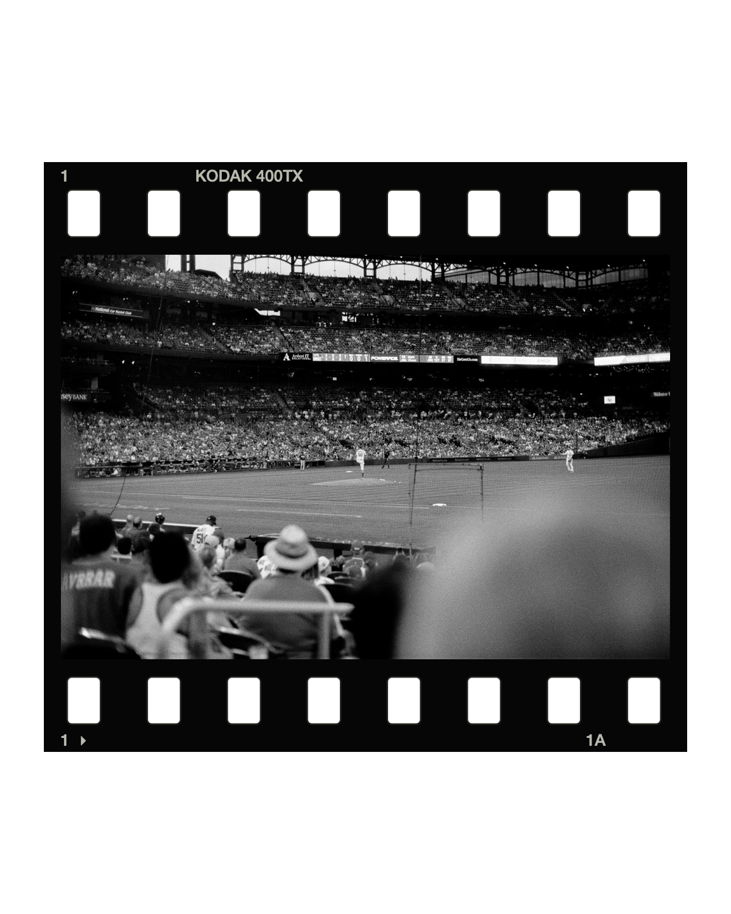
Photographs by Brian Renshaw. All examples made with Decks.
Start with a template.
Pick a starting layout and your photos or videos. Then shape the page and choose a frame, with your own photos in the preview.
Choose a layout
Start with one photo, a few photos together, or a panorama.
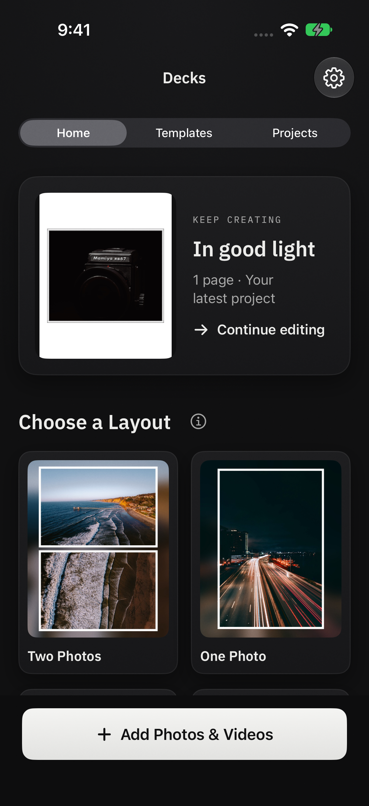
Choose a size
Use a vertical, horizontal, or square page for the post you have in mind.
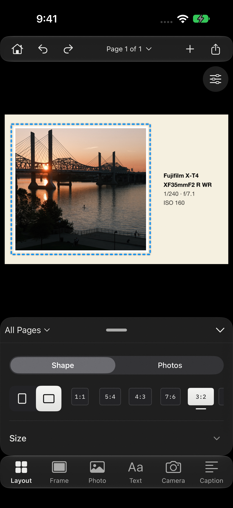
Choose a frame
Choose a plain or film border, a color from your photo, or a blurred background.
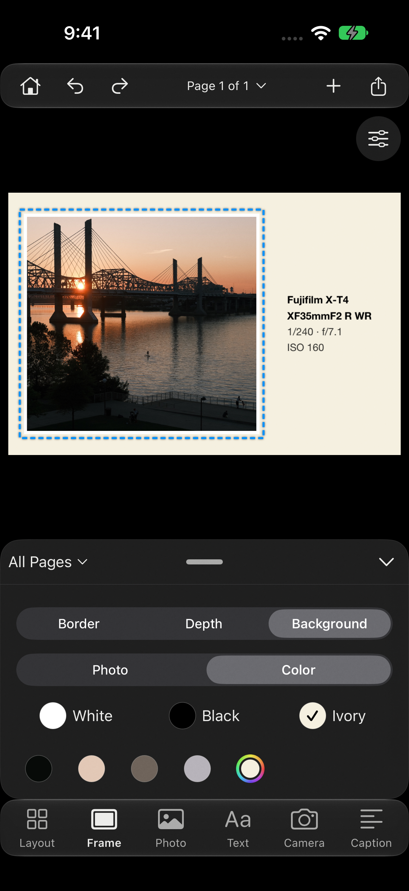


Add more photos at any time. Open spaces in tiled layouts fill before Decks adds another page.
Include your camera details.
Put the camera, lens, and exposure settings beside your photo, beneath it, or over it. Arrange keeps the card’s proportions, gives it room to breathe, and adapts when you change the photo’s shape. Each photo can have its own details.
Decks reads the information from your photo. You can also insert it into a caption or add your own camera and lens details for film photographs.


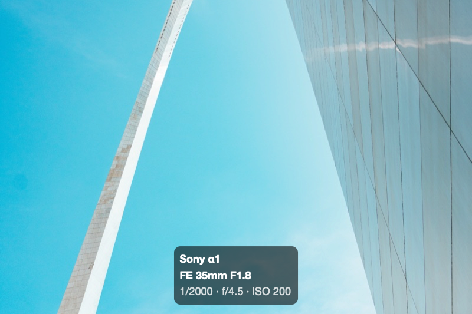

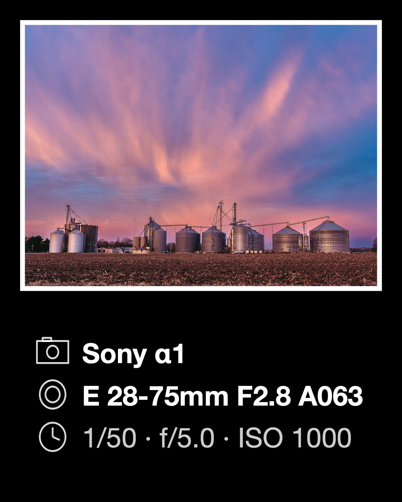

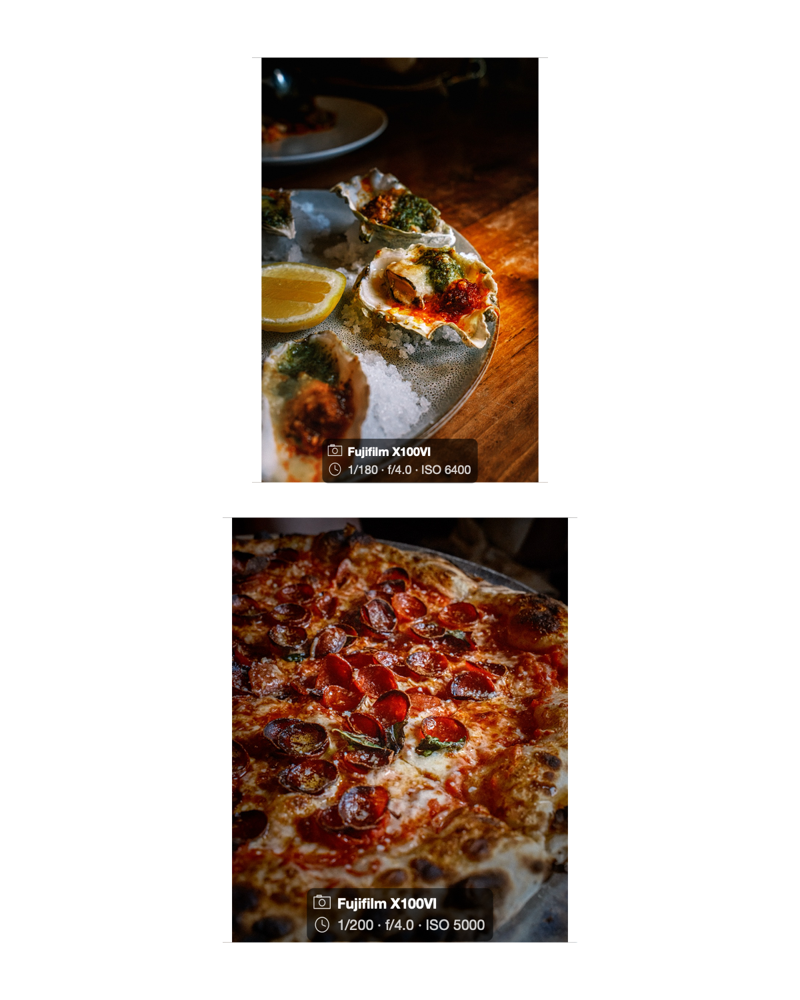
These examples use the photographs’ actual camera settings. Choose which details appear and where they go.
Keep your photo in view.
Crop and shape a photo in its own tool. Drag the details handle to make room for the controls or the canvas. Tap the active tool to hide its panel and see more of your work.
Swipe from the canvas margins to change pages, or swipe up to arrange them. Set your own swipe actions in Settings → Gestures.
Editor controls and gestures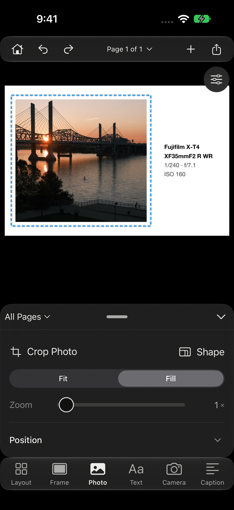
Write your captions in one place.
Write captions and add camera details. Your captions stay with the project.
Copy a caption, switch to Instagram, and paste it into your post. Come back to Decks for the next one. The Caption Sheet keeps track of which captions you’ve copied.
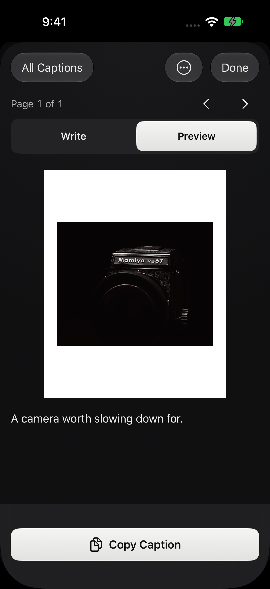
Make a template of your own.
Save a frame you like and use it for the next set of photos. Create a template from scratch, edit one you’ve saved, or duplicate it to try a different layout.
Use it from Apple Shortcuts.
Your saved templates work with Apple Shortcuts. Select photos in Apple Photos, run a Shortcut with your template, and save the framed results back to your library—without opening Decks.
Run it from Shortcuts, Siri, or the Action button. To use it in the Photos share sheet, add the Decks Templates shortcut and choose your template.
How to set up a Shortcut
Photos and videos together.
Use the same layouts, frames, text, and camera cards with photos and videos. Trim a clip in the editor and save it alongside your photos.
Adjust your frame.
Adjust borders and backgrounds, crop and position your photos, or add text and a logo. Start with the basics and open the finer controls when you need them.
More features.
Frames and layouts
Choose a page size, arrange multiple photos, and adjust individual margins. Backgrounds can use white, black, ivory, colors sampled from your photo, a custom color, or a blurred photo. Replace an image or clip in Photo or Video mode. Film borders, shadows, and outlines give you more options.
Panoramas
Split a photograph across linked pages for a carousel. Preview the full panorama and the Threads feed crop before exporting.

Text and camera details
Move, resize, and rotate text on the page. Use system fonts or fonts installed on your device, add a logo, and choose which camera details appear and in what order. Save your camera and lens information in My Gear for photographs without those details.
See the compact Text panelControls and gestures
Panels fit their controls, and manual heights are remembered for each tool. This Page or All Pages stays available across tools for page layout and frame settings. The page indicator handles navigation. Blue dashed outlines mark selected photos, text, logos, and camera details. Customize four canvas-margin swipes; Previous, Next, Arrange Pages, and other visible controls stay available.
See gesture settingsSaving and sharing
Save photos as JPEG or PNG and videos as MP4, or use the share sheet. Still photos export at 1440 pixels wide by default. Decks prepares the files; you post them in Instagram, Threads, or another app. You can also export a contact sheet.
Your library and privacy
Projects and templates stay on your device. Optional iCloud sync keeps them available on your iPhone and iPad. Exports remove GPS and contact metadata. Read the privacy policy for the full details.
Try Decks.
Available in beta for iPhone and iPad. I’d like to hear how it works for your photography.
Made by Brian Renshaw, photographer and developer.